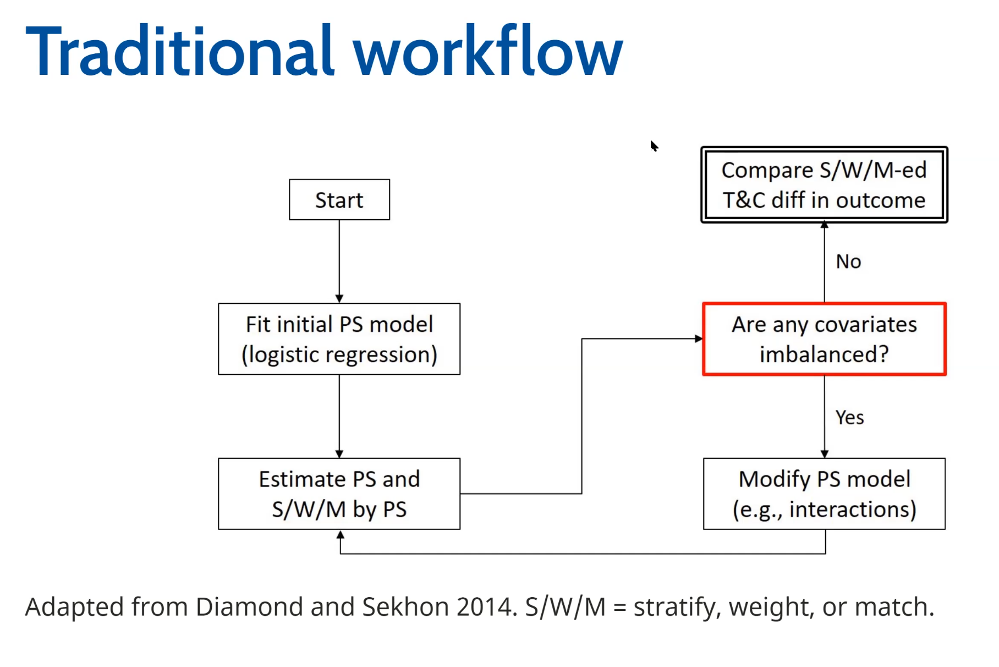
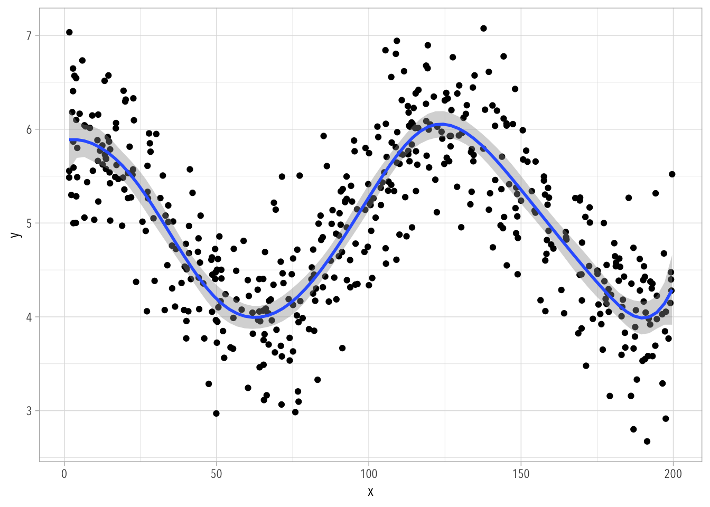

Joint Submission. My comments are in the shaded boxes.
Estimand
The parameter or quantity of interest that one aims to estimate in a statistical analysis. It defines what effect or measure is being targeted by the analysis, specifying how it relates to the variables and data involved.
Counterfactual
The counterfactual compares the observed results of something that did happen to the expected results if the treatment had not happened.
Potential Outcomes
The set of all possible outcomes for each individual in a study, under each possible treatment or intervention scenario. These outcomes reflect what could happen to each individual under different conditions.
Note.
I think it’s better to think of “potential outcomes.”
For example, in the case of a binary treatment, the potential outcomes framework involves the following:
\(T\) is a treatment variable. The terms “treatment” and “cause” are used interchangeably.
\(Y\) is the outcome we observe.
\(Y^0\) is the the value the outcome would take if \(T=0\).
\(Y^1\) is the value the outcome would take if \(T=1\).
\(Y^0\) and \(Y^1\) are the potential outcomes.
We see \(Y^0\)or\(Y^1\) for the same unit, but never both.
This is the fundamental problem of causal inference.
When \(T=1\), \(Y^0\) is the counterfactual.
When \(T=0\), \(Y^1\) is the counterfactual.
Theoretical Estimand
This is the actual thing we would like to know in our research question. The two components of the theoretical estimand are the unit-specific quantity and the target population. The theoretical estimand includes both observed and unobserved data (including counterfactuals).
Empirical Estimand
The empirical estimand is the target of inference that only includes observable data and relies on identification assumptions.
Causal Interaction
A causal interaction is the intervention to two variables averaged over one population. In other words, the effect of one variable on the outcome is related to the effect of another.
Baseline Bias
When the treatment and the control group differ from one another for reasons other than the treatment they receive.
Average Treatment Effect (ATE)
The average treatment effect across the population. In other words, this is the effect of switching treatment statuses (e.g., from either treatment to control or from control to treatment).
Conditional Average Treatment Effect (CATE)
The average treatment effect among a specific group as defined by certain control variables covariates.
For example, if the control variable covariate is \(X\), the CATE can be written as \(E(Y^1-Y^0 \mid X = x)\).
Note.
The word “control” has some baggage because it has the connotation that we can somehow manipulate \(X\). Here, we’d usually want to condition on variables like “gender” or “race.”
Average Treatment Effect on the Treated (ATT)
The average treatment effect, calculated only from the treatment group. To conceptualize the ATT, imagine taking away treatment from those who were treated and measuring the change.
Average Treatment Effect on the Untreated (ATU)
The average treatment effect, calculated only from the untreated group. To conceptualize the ATU, imagine giving the treatment to those who were not treated and measuring the change.
Unit-Specific Quantity
A measurement or outcome that pertains to an individual unit or subject in a study, often used in contexts where the effect of a treatment may vary from one unit to another.
Treatment Effect Heterogeneity
When a treatment has different effects on a population.
For, example, a treatment for cervical cancer will have heterogeneous effects on people with cervixes versus people without cervixes, even if both groups in the population receive identical treatments. This is because people without cervixes will receive no treatment effect from drugs that target an organ they do not have.
Note.
This is an extreme example. You’d usually want to remove men from design (i.e., not administering the treatment to people without cervixes).
In a less extreme example, the treatment for cervical cancer could have varying effects across women belonging to different age groups.
Directed Acyclic Graph (DAG)
A tool used to depict the data-generating process with nodes to represent the variable and the arrows to represent the causal relationships.
Causal diagrams or DAGs are graphical representations of a data generating process. Everything we draw is hopefully an informed assumption; everything that’s not in the diagram is also an assumption. In other words, DAGs encode identifying assumptions.
The idea of a directed acyclical graph (DAG) implies that there are no cycles. If a variable causes itself, it’s near impossible to isolate or identifying the cause of anything. The world is full with feedback loops of all sorts, but we deal with them through the incorporation of time or by isolating one effect through some kind of experimental scenario.
Note that DAGs are agnostic about functional form. This includes interactions among variables! Some people deal with interactions by drawing arrows toward arrows or by representing interactions explicitly as separate nodes.
The nicest thing about DAGs is that they help us spell out the testable implications of our assumptions. For example, if our causal diagram implies that a relationship between variables is zero, we can check for that.
Unobserved / Unmeasured Variable
A variable that may be present in the researcher’s assumptions about how the world works, but that is not addressed or available in the data.
Note.
In a DAG, these variables are usually depicted by being enclosed within a circle.
Path
A path is simply the steps from one variable to another on a causal diagram.
For example, \(A \to B \to C\) is a path.
Direct Effects
The effect of only the treatment variable on the outcome variable.
Indirect Effects
The portion of the change in an outcome that is mediated through one or more intermediate variables, reflecting the causal influence exerted through these mediating variables.
Total Effects
The sum of direct and indirect effects.
Front-Door Path
A causal path in which all of the arrows in the causal diagram point from the treatment variable and towards the outcome variable.
Back-Door Path
The rest of the paths on a causal diagram [connecting treatment to outcome] that are not front-door paths.
Confounding Variable
A variable that affects both the treatment and outcome variables.
Note: Not adjusting for a confounding variable threatens the causal relationship between the treatment and outcome variables.
Note.
The expression “threatens the causal relationship” is vague and clunky. A better way to say this is that the causal effect is not identified when we don’t adjust for confounding paths.
An even better way to talk about confounding is to realize that “confounding” is a property of paths, it’s NOT a property of variables.
Collider Variable
A variable in a DAG that is influenced by two or more other variables. Conditioning on a collider can open a confounding path, inadvertently introducing bias into the analysis.
A variable is a collider in a path iff both arrows point at it.
\[
a \to b \to c_\text{ollider} \leftarrow d \leftarrow e \to f
\]
Here, \(b\) and \(c\) are unrelated unless we remove variation in \(c\) (e.g., by including it in a regression).
We close paths by removing variation from one variable along the path (i.e., adjusting); but if the variable is a collider, then removing variation will actually open a path that was already closed.
An often unacknowledged way of adjusting for colliders is during the sample selection phase. If we have a sample of college students, it means we are adjusting for college attendance.
Open Path
A path on a causal diagram in which there is variation in all variables along the path (and no variation in any colliders on that path).
Closed Path
A path on a causal diagram in which one or more variables has no variation.
Note: A path is also considered closed if there is a collider variable present on that path.
Regression
Regression focuses on estimating the effect of variables on an outcome through a mathematical model, assuming a specific form of relationship.
Note.
This is NOT a good definition!!
In the usual context of regression, predictive inference relates to comparisons between units. In the context of causal inference, we attempt to make comparisons of different treatments as if applied to the same units.
In order to make causal interpretations of regression coefficients we rely very strong assumptions. In short, causal effects can be estimated with regression if the model includes all confounding variables and if the “functional form” is correct.
Translating DAGs into Regression
Figure 24.1: Flow Chart For Constructing Regression Equations [@huntington-klein2021, pp. 199]
Matching and Weighting
Matching and weighting seeks to identify the treatment effect by adjusting for selection into treatment by comparing similar treatment and control cases based on certain attributes.
Note: This is distinct from regression, which adjusts for variables that impact the outcome.
Both regression and matching/weighting are strategies to close the backdoor path between \(T\) and \(Y\). Both are conditional on observable covariates. However, matching/weighting provides a way to model treatment selection so that everyone looks the same on the pre-treatment covariates.
Matching/weighting refers to a set of procedures that modify the original sample in preparation for a statistical analysis. It’s a form of data pre-processing. The goal is to create a sample that looks like it was created from a randomized experiment.
Here are some benefits of matching/weighting procedures:
They are less restrictive about functional form than regression. We rely less on parametric assumptions. The intuition is the same as with an experiment: if we can create sufficient overlap and balance between treatment and control groups, then we should get a reasonable estimate of the treatment effect, even if the model used to estimate it is misspecified.
Regression models on pre-processed data gives us two opportunities to close backdoor paths (i.e., “double robustness”).
Exact Matching
Exact matching compares treatment and control cases that have exactly identical characteristics on a certain combination of variables. In this way, treatment cases are matched to control cases that share the exact same distribution of values for the matching variable(s) of interest, making the only difference between them is treatment status.
The three assumptions for exact matching are as follows:
Selection of variables-conditional independence assumption.
Overlap (any individual case has a non-zero probability of treatment).
Stable unit treatment value assumption (SUTVA; treatment status and effect of treatment is independent for each case).
Note.
These assumptions are NOT unique to matching.
A better discussion of overlap can be found here or in one of the textbooks.
This brief discussion from the MatchIt vignette is also useful:
The conditional independence assumption asserts that two events occur independent of one another (i.e., the two events do not influence one another).
The CIA (also known as “conditional ignorability” assumption) builds on the more general idea of ignorability.
Experiments work because they make the distribution of potential outcomes the same across levels of the treatment variable. In other words, the potential outcomes and the treatment indicator are independent.
\[
Y^0, Y^1 \perp T
\]
Here, the \(\perp\) symbol means independent.
The CIA is a necessary assumption we make when using both regression and matching/weighting to identify a causal effect.
Instead of a simple independence assumption that we have for randomized experiments, we now have to rely on a conditional ignorability. Just like in the case of experiments, we want distribution of potential outcomes the same across levels of the treatment variable. In other words, the potential outcomes and the treatment indicator should be independent, conditional on the covariates \(\boldsymbol{X}\) used in the analysis.
\[
Y^0, Y^1 \perp T \mid \boldsymbol X
\]
Here, \(\boldsymbol{X}\) is meant to depict a collection of variables that will close the back-door path.
This strategy will get more complicated as the vector \(\boldsymbol X\) grows in size.
Region of Common Support
This is the assumption that either for distribution of a matching variable (in exact matching) or for distribution of propensity scores (in weighting), there are both treatment and control cases. If there is overlap, this is known as the region of common support. If there is not overlap in the distributions, that is “off support” and makes causal inference a little more tricky.
Note.
What makes it “tricky” is that we don’t have direct support from the data to estimate the relevant counterfactuals—e.g., regression will just extrapolate.
Feasible Estimate of Treatment Effects
When calculating a treatment effect, it is sometimes necessary to drop cases that fall outside of the “region of common support.” Because cases are dropped, the “true” treatment effect cannot be calculated, which leaves us with calculating the “feasible” treatment effect instead.
Propensity Score
A subject’s individual probability of receiving treatment. Propensity scores can then be used to match or weight control cases to mimic the treatment group.
Doubly-Robust
Using “doubly robust” methods refers to using both regression and balancing in an equation simultaneously. Employing doubly robust measures is a way to mitigate biases or confounding variables from influencing the “true” treatment effect of your model.
Inverse probability of treatment weights (IPTW)
This is the weight that is calculated from the propensity score (which is just the probability of treatment). The idea is to apply a weight to each case that makes the treatment and the control groups balanced on the propensity score and therefore (hopefully) on the individual covariates.
Covariate Balance
In the workflow of propensity score matching and weighting, a key step is to verify if covariates are balanced or imbalanced. Covariate balance is the degree to which the distribution of covariates is similar across levels of treatment.
Note: The convention we’ve been operating under is that the standardized difference in means between the treatment and control groups for each variable is < 0.1 (1/10th of a standard deviation).

Kolmogorov-Smirnov Distance (KSD)
The KSD is the proportion of non-overlap between two distributions (or, if dealing with cumulative distributions, the maximum distance between two distributions).
Note: A value of 0 means that the distributions perfectly overlap, while a value of 1 means that the distributions do not overlap at all. The rule of thumb here is that the maximum KSD should be < 0.05.
Note: When both standard mean differences (SMDs) and KSDs are in their respective acceptable ranges, you can confidently say covariates are balanced.
Entropy Balancing
A method of covariate balancing that seeks to balance on mean (like SMDs), variance (like KSDs), and on skewness.
Panel Data
Long-Form Data
In long-form data, each row is a “unit-observation,” meaning that each row is exactly one observation. Thus, if person A is observed four times, her data will be stored in four separate rows.
Wide-Form Data
In wide-form data, each row contains all of the observations for that one specific unit. Thus, if person A is observed four times, her data will be stored in only one row.
Within- vs. Between-Subject Variance
Within-Subject Variance is the variation that exists within individuals and changes over time. In contrast, Between-Subject Variance exists between individuals and is more or less stable over time.
For example, an individual being taller than someone else is considered between-subject variance, as it measures the differences between two different subjects. However, an individual being taller than he was ten years ago is an example of within-subject variance, because it measures the differences between the same subject at two different time periods.
Intra-Class Correlation (ICC)
The ICC is a descriptive statistic that ranges from 0 to 1 and measures the proportion of variance that is between individuals versus within individuals.
For example, an ICC of 0.25 indicates that a quarter of the variance exists between individuals, and three-fourths of the variance occurs within individuals.
Mixed Models
A mixed model is simply a linear regression with two error terms: level 1 units (observations) and level 2 units (people). Mixed models include a mix of within-subject variance and between-subject variance, weighing one or the other more heavily based on how much of the total variance it contributes.
So much more to say…
This might be useful to keep in mind:
Fixed-Effects Model
A fixed-effects model is a statistical model that uses waves of observations from the same individual, then calculates the changes for the variables that differ in different waves of observations.
Note: The fixed-effects model also holds time constant.
Panel data provides the most common use of varying intercepts to estimate causal effects. Here we use repeated observations within the same individuals to adjust for time-constant unobserved confounders. Here, issues of balance and overlap still exist, but they only apply for within-person comparisons.
If the purpose of matching/weighting is to get rid of all observable confounders, then the purpose of fixed-effects is to get rid of all time-constant unobserved confounders.
Note. Fixed Effects are also Mixed Models.
Difference-in-Differences
A simple difference-in-differences test compares the amounts that the treated and control groups change at time 1 and time 2. The equation for calculating a difference-in-differences reads as follows:
DiD = (Treated Time 2 - Treated Time 1) - (Untreated Time 2 - Untreated Time 1)
Note: The DiD calculation relies on the parallel trends assumption.
Parallel Trends Assumption
The parallel trends assumption assumes that, during the measurement period, the treated and untreated groups would have changed in similar ways if the treated group did not receive treatment.
Note: The parallel trends assumption cannot be directly tested, but looking at prior trends can be useful for determining if the assumption is likely to be true.
Code
library(tidyverse)theme_set(theme_light(base_family ="Avenir Next Condensed"))tibble(t =c("Time 0", "Time 1"),y1 =1:2,y0 =0:1,y =c(1, 3)) |>pivot_longer(!c(t, y), names_to ="g") |>ggplot(aes(t, value, group = g)) +geom_line(linetype ="dashed") +geom_vline(xintercept =c("Time 0", "Time 1")) +geom_line(aes(t, y)) +geom_segment(x ="Time 1", y =2, yend =3, xend ="Time 1", linewidth =1.5, color ="steelblue1") +labs(y =NULL, x =NULL) +theme(axis.text.y =element_blank(), axis.ticks.y =element_blank(), panel.grid =element_blank()) +annotate("text", x =2.2, y =2.5, label = latex2exp::TeX(r"($E[d^1 - d^0]$)"), family ="Crimson Text")
Figure 24.2: Parallel Trends
Two-Way Fixed Effects (TWFE)
The TWFE model is a way of isolating confounding effects in order to focus only on the within-subject treatment effect. Specifically, the TWFE model holds constant the effect of the individual and also holds constant the effect of time, therefore adjusting for both.
The TWFE difference-in-differences estimator refers to the coefficients learned by a regression model with fixed effects for treatment condition and time period, clustered for treatment condition.
Ordinary Least Squares (OLS)
A method of estimating the parameters in a linear regression model. OLS chooses the parameters that minimize the sum of the squared differences between the observed values and the values predicted by the model.
Bootstrapping
Bootstrapping is a statistical technique in which a single data set is sampled and resampled in order to run simulations and pull samples to account for random error.
We use bootstrapping to calculate standard errors in some cases.
Splines
A spline is a flexible kind of model that combines different models [parameters] in order to create the best estimate for the equation [nonlinear regression curves expressed as the sum of many localized pieces].
Note: The transition from one model into another (i.e., where the data splits) is referred to as a “knot.”
You don’t need to know this, but here is how this looks like:
Code
library(tidyverse)N <-500d <-tibble(x =runif(N, 1, 200),y =rnorm(N, mean =5+cos(0.05*x), sd =0.5))d |>ggplot(aes(x, y)) +geom_point() +geom_smooth(method ="lm", formula = y ~ splines::bs(x, df =10))

Under the hood, the bs() function is partitioning the \(x\) variable into 10 separate variables, each of them with their own weight, so that we have something like this:
Code
B <- splines::bs(d$x, df =10)ds <-as_tibble(B)ds$x <- d$xds |>pivot_longer(!x, names_to ="b", values_to ="w") |>ggplot(aes(x, w, group = b)) +geom_line()
Each of these separate variables is then associated with its own coefficient, which we estimate using linear regression.
These parameters are very difficult to interpret directly.
Code
ols <-lm(y ~ splines::bs(x, df =10), data = d)broom::tidy(ols)
In a causal inference context, we would want to do this when we have a covariate that interacts with the treatment in ways that are simply not captured by adding a quadratic term. This is one situation in which marginal effects come in handy.
Source Code
---title: "Glossary"number-sections: false---*Joint Submission. My comments are in the shaded boxes.*## EstimandThe parameter or quantity of interest that one aims to estimate in a statistical analysis. It defines what effect or measure is being targeted by the analysis, specifying how it relates to the variables and data involved.## CounterfactualThe counterfactual compares the observed results of something that did happen to the expected results if the treatment *had not* happened.## Potential OutcomesThe set of all possible outcomes for each individual in a study, under each possible treatment or intervention scenario. These outcomes reflect what could happen to each individual under different conditions.::: box-text-customNote.I think it's better to think of "potential outcomes."For example, in the case of a **binary** treatment, the potential outcomes framework involves the following:- $T$ is a treatment variable. The terms "treatment" and "cause" are used interchangeably.- $Y$ is the outcome we observe.- $Y^0$ is the the value the outcome *would* take if $T=0$.- $Y^1$ is the value the outcome *would* take if $T=1$.- $Y^0$ and $Y^1$ are the *potential outcomes.*- We see $Y^0$ *or* $Y^1$ for the same unit, but never both. This is the **fundamental problem of causal inference**.- When $T=1$, $Y^0$ is the *counterfactual.*- When $T=0$, $Y^1$ is the *counterfactual.*:::## Theoretical EstimandThis is the actual thing we would like to know in our research question. The two components of the theoretical estimand are the unit-specific quantity and the target population. The theoretical estimand includes both observed and unobserved data (including counterfactuals).## Empirical EstimandThe empirical estimand is the target of inference that only includes observable data and relies on identification assumptions.## Causal InteractionA causal interaction is the intervention to two variables averaged over one population. In other words, the effect of one variable on the outcome is related to the effect of another.## Baseline BiasWhen the treatment and the control group differ from one another for reasons other than the treatment they receive.## Average Treatment Effect (ATE)The average treatment effect across the population. In other words, this is the effect of switching treatment statuses (e.g., from either treatment to control or from control to treatment).## Conditional Average Treatment Effect (CATE)The average treatment effect among a specific group as defined by certain ~~control variables~~ covariates.For example, if the ~~control variable~~ covariate is $X$, the CATE can be written as $E(Y^1-Y^0 \mid X = x)$.::: box-text-customNote.The word "control" has some baggage because it has the connotation that we can somehow manipulate $X$. Here, we'd usually want to condition on variables like "gender" or "race.":::## Average Treatment Effect on the Treated (ATT)The average treatment effect, calculated only from the treatment group. To conceptualize the ATT, imagine *taking away* treatment from those who were treated and measuring the change.## Average Treatment Effect on the Untreated (ATU)The average treatment effect, calculated only from the untreated group. To conceptualize the ATU, imagine *giving* the treatment to those who were not treated and measuring the change.## Unit-Specific QuantityA measurement or outcome that pertains to an individual unit or subject in a study, often used in contexts where the effect of a treatment may vary from one unit to another.## Treatment Effect HeterogeneityWhen a treatment has different effects on a population.For, example, a treatment for cervical cancer will have heterogeneous effects on people with cervixes versus people without cervixes, even if both groups in the population receive identical treatments. This is because people without cervixes will receive no treatment effect from drugs that target an organ they do not have.------------------------------------------------------------------------::: box-text-customNote.This is an extreme example. You'd usually want to remove men from design (i.e., not administering the treatment to people without cervixes).In a less extreme example, the treatment for cervical cancer could have varying effects across women belonging to different age groups.:::## Directed Acyclic Graph (DAG)A tool used to depict the data-generating process with nodes to represent the variable and the arrows to represent the causal relationships.::: box-text-customCausal diagrams or DAGs are graphical representations of a **data generating process**. Everything we draw is hopefully an informed assumption; everything that’s not in the diagram is *also* an assumption. In other words, DAGs encode identifying assumptions.The idea of a directed acyclical graph (DAG) implies that there are *no cycles.* If a variable causes itself, it’s near impossible to isolate or identifying the cause of anything. The world is full with feedback loops of all sorts, but we deal with them through the incorporation of time or by isolating one effect through some kind of experimental scenario.*Note that DAGs are agnostic about functional form. This includes interactions among variables! Some people deal with interactions by drawing arrows toward arrows or by representing interactions explicitly as separate nodes.*The nicest thing about DAGs is that they help us spell out the **testable implications** of our assumptions. For example, if our causal diagram implies that a relationship between variables is zero, we can check for that.:::### Unobserved / Unmeasured VariableA variable that may be present in the researcher's assumptions about how the world works, but that is not ~~addressed or~~ available in the data.::: box-text-customNote.In a DAG, these variables are usually depicted by being enclosed within a circle.:::### PathA path is simply the steps from one variable to another on a causal diagram.For example, $A \to B \to C$ is a path.### Direct EffectsThe effect of only the treatment variable on the outcome variable.### Indirect EffectsThe portion of the change in an outcome that is mediated through one or more intermediate variables, reflecting the causal influence exerted through these mediating variables.### Total EffectsThe sum of direct and indirect effects.### Front-Door PathA causal path in which all of the arrows in the causal diagram point from the treatment variable and towards the outcome variable.### Back-Door PathThe rest of the paths on a causal diagram \[connecting treatment to outcome\] that are not front-door paths.### Confounding ~~Variable~~A variable that affects both the treatment and outcome variables.Note: Not adjusting for a confounding variable threatens the causal relationship between the treatment and outcome variables.------------------------------------------------------------------------::: box-text-customNote.The expression "threatens the causal relationship" is vague and clunky. A better way to say this is that the causal effect is not **identified** when we don't adjust for confounding paths.An even *better* way to talk about confounding is to realize that "confounding" is a property of **paths**, it's NOT a property of variables.:::### Collider VariableA variable in a DAG that is influenced by two or more other variables. Conditioning on a collider can open a confounding path, inadvertently introducing bias into the analysis.::: box-text-customA variable is a collider in a path *iff* both arrows point at it.$$a \to b \to c_\text{ollider} \leftarrow d \leftarrow e \to f$$Here, $b$ and $c$ are unrelated *unless* we remove variation in $c$ (e.g., by including it in a regression).We close paths by removing variation from one variable along the path (i.e., adjusting); but if the variable is a collider, then removing variation will actually *open* a path that was already closed.An often unacknowledged way of adjusting for colliders is during the sample selection phase. If we have a sample of college students, it means we are adjusting for college attendance.:::### Open PathA path on a causal diagram in which there is variation in all variables along the path (and no variation in any colliders on that path).### Closed PathA path on a causal diagram in which one or more variables has no variation.Note: A path is also considered closed if there is a collider variable present on that path.## RegressionRegression focuses on estimating the effect of variables on an outcome through a mathematical model, assuming a specific form of relationship.::: box-text-customNote.This is NOT a good definition!!In the usual context of regression, predictive inference relates to comparisons *between* units. In the context of causal inference, we attempt to make comparisons of different treatments *as if applied to the same units.*In order to make causal interpretations of regression coefficients we rely very strong assumptions. In short, causal effects can be estimated with regression if the model includes all confounding variables *and* if the "functional form" is correct.**Translating DAGs into Regression**![Flow Chart For Constructing Regression Equations \[\@huntington-klein2021, pp. 199\]](images/reg-chart.png){#fig-reg-chart fig-align="center" width="70%"}:::## Matching and WeightingMatching and weighting seeks to identify the treatment effect by adjusting for selection into treatment by comparing similar treatment and control cases based on certain attributes.Note: This is distinct from regression, which adjusts for variables that impact the outcome.::: box-text-customBoth **regression** and **matching/weighting** are strategies to close the backdoor path between $T$ and $Y$. *Both are conditional on observable covariates.* However, matching/weighting provides a way to model treatment selection so that everyone looks the same on the pre-treatment covariates.**Matching/weighting** refers to a set of procedures that modify the original sample in preparation for a statistical analysis. It's a form of data pre-processing. The goal is to create a sample that *looks like* it was created from a randomized experiment.Here are some benefits of matching/weighting procedures:- They are *less restrictive* about functional form than regression. We rely less on parametric assumptions. The intuition is the same as with an experiment: if we can create sufficient overlap and balance between treatment and control groups, then we should get a reasonable estimate of the treatment effect, *even if the model used to estimate it is misspecified*.- Regression models on pre-processed data gives us two opportunities to close backdoor paths (i.e., "double robustness").:::## Exact MatchingExact matching compares treatment and control cases that have exactly identical characteristics on a certain combination of variables. In this way, treatment cases are matched to control cases that share the exact same distribution of values for the matching variable(s) of interest, making the only difference between them is treatment status.~~The three assumptions for exact matching are as follows:~~1. ~~Selection of variables-conditional independence assumption.~~2. ~~Overlap (any individual case has a non-zero probability of treatment).~~3. ~~Stable unit treatment value assumption (SUTVA; treatment status and effect of treatment is independent for each case).~~------------------------------------------------------------------------::: box-text-customNote.These assumptions are NOT unique to matching.A better discussion of overlap can be found [here](https://acastroaraujo.github.io/socStats2/week06.html#balance-and-overlap) or in one of the textbooks.This brief discussion from the `MatchIt` vignette is also useful:<https://kosukeimai.github.io/MatchIt/articles/matching-methods.html#exact-matching-method-exact>:::## Conditional Independence Assumption (CIA)~~The conditional independence assumption asserts that two events occur independent of one another (i.e., the two events do not influence one another).~~::: box-text-customThe CIA (also known as "conditional ignorability" assumption) builds on the more general idea of **ignorability**.Experiments work because they make the distribution of potential outcomes the same across levels of the treatment variable. In other words, the potential outcomes and the treatment indicator are *independent.*$$Y^0, Y^1 \perp T$$Here, the $\perp$ symbol means independent.The CIA is a necessary assumption we make when using both *regression* and *matching/weighting* to identify a causal effect.Instead of a simple independence assumption that we have for randomized experiments, we now have to rely on a **conditional** ignorability. Just like in the case of experiments, we want distribution of potential outcomes the same across levels of the treatment variable. In other words, the potential outcomes and the treatment indicator *should* be independent, conditional on the covariates $\boldsymbol{X}$ used in the analysis.$$Y^0, Y^1 \perp T \mid \boldsymbol X$$Here, $\boldsymbol{X}$ is meant to depict a collection of variables that will close the back-door path.This strategy will get more complicated as the vector $\boldsymbol X$ grows in size.:::## Region of Common SupportThis is the assumption that either for distribution of a matching variable (in exact matching) or for distribution of propensity scores (in weighting), there are both treatment and control cases. If there is overlap, this is known as the region of common support. If there is not overlap in the distributions, that is “off support” and makes causal inference a little more tricky.::: box-text-customNote.What makes it "tricky" is that we don't have direct support from the data to estimate the relevant counterfactuals—e.g., regression will just *extrapolate.*:::## Feasible Estimate of Treatment EffectsWhen calculating a treatment effect, it is sometimes necessary to drop cases that fall outside of the "region of common support." Because cases are dropped, the "true" treatment effect cannot be calculated, which leaves us with calculating the "feasible" treatment effect instead.## Propensity ScoreA subject’s individual probability of receiving treatment. Propensity scores can then be used to match or weight control cases to mimic the treatment group.## Doubly-RobustUsing "doubly robust" methods refers to using both regression and balancing ~~in an equation~~ simultaneously. Employing doubly robust measures is a way to mitigate biases or confounding variables from influencing the "true" treatment effect of your model.## Inverse probability of treatment weights (IPTW)This is the weight that is calculated from the propensity score (which is just the probability of treatment). The idea is to apply a weight to each case that makes the treatment and the control groups balanced on the propensity score and therefore (hopefully) on the individual covariates.## Covariate BalanceIn the workflow of propensity score matching and weighting, a key step is to verify if covariates are balanced or imbalanced. Covariate balance is the degree to which the distribution of covariates is similar across levels of treatment.Note: The convention we’ve been operating under is that the standardized difference in means between the treatment and control groups for each variable is \< 0.1 (1/10th of a standard deviation).::: box-text-custom{fig-align="center" width="70%"}:::## Kolmogorov-Smirnov Distance (KSD)The KSD is the proportion of non-overlap between two distributions (or, if dealing with cumulative distributions, the maximum distance between two distributions).Note: A value of 0 means that the distributions perfectly overlap, while a value of 1 means that the distributions do not overlap at all. The rule of thumb here is that the maximum KSD should be \< 0.05.Note: When both standard mean differences (SMDs) and KSDs are in their respective acceptable ranges, you can confidently say covariates are balanced.## Entropy BalancingA method of covariate balancing that seeks to balance on mean (like SMDs), variance (like KSDs), and on skewness.## Panel Data### Long-Form DataIn long-form data, each row is a "unit-observation," meaning that each row is exactly one observation. Thus, if person A is observed four times, her data will be stored in four separate rows.### Wide-Form DataIn wide-form data, each row contains all of the observations for that *one specific* unit. Thus, if person A is observed four times, her data will be stored in only one row.## Within- vs. Between-Subject VarianceWithin-Subject Variance is the variation that exists within individuals and changes over time. In contrast, Between-Subject Variance exists between individuals and is more or less stable over time.For example, an individual being taller than someone else is considered between-subject variance, as it measures the differences between two different subjects. However, an individual being taller than he was ten years ago is an example of within-subject variance, because it measures the differences between *the same subject* at two different time periods.## Intra-Class Correlation (ICC)The ICC is a descriptive statistic that ranges from 0 to 1 and measures the proportion of variance that is between individuals versus within individuals.For example, an ICC of 0.25 indicates that a quarter of the variance exists between individuals, and three-fourths of the variance occurs within individuals.## Mixed ModelsA mixed model is simply a linear regression with two error terms: level 1 units (observations) and level 2 units (people). Mixed models include a mix of within-subject variance and between-subject variance, weighing one or the other more heavily based on how much of the total variance it contributes.::: box-text-customSo much more to say...This might be useful to keep in mind:{fig-align="center" width="80%"}:::## Fixed-Effects ModelA fixed-effects model is a statistical model that uses waves of observations from the same individual, then calculates the changes for the variables that differ in different waves of observations.~~Note: The fixed-effects model also holds time constant.~~::: box-text-customPanel data provides the most common use of varying intercepts to estimate causal effects. Here we use repeated observations within the same individuals to adjust for time-constant unobserved confounders. Here, issues of balance and overlap still exist, but they only apply for *within-*person comparisons.If the purpose of **matching/weighting** is to get rid of all observable confounders, then the purpose of **fixed-effects** is to get rid of all time-constant unobserved confounders.*Note. Fixed Effects are also Mixed Models.*:::## Difference-in-DifferencesA simple difference-in-differences test compares the amounts that the treated and control groups change at time 1 and time 2. The equation for calculating a difference-in-differences reads as follows:::: {style="text-align: center;"}DiD = (Treated Time 2 - Treated Time 1) - (Untreated Time 2 - Untreated Time 1):::Note: The DiD calculation relies on the parallel trends assumption.### Parallel Trends AssumptionThe parallel trends assumption assumes that, during the measurement period, the treated and untreated groups would have changed in similar ways if the treated group did not receive treatment.Note: The parallel trends assumption cannot be directly tested, but looking at prior trends can be useful for determining if the assumption is likely to be true.::: box-text-custom```{r}#| code-fold: true#| label: fig-parallel-trends#| fig-cap: "Parallel Trends"#| fig-width: 4#| fig-height: 3#| warning: false#| message: falselibrary(tidyverse)theme_set(theme_light(base_family ="Avenir Next Condensed"))tibble(t =c("Time 0", "Time 1"),y1 =1:2,y0 =0:1,y =c(1, 3)) |>pivot_longer(!c(t, y), names_to ="g") |>ggplot(aes(t, value, group = g)) +geom_line(linetype ="dashed") +geom_vline(xintercept =c("Time 0", "Time 1")) +geom_line(aes(t, y)) +geom_segment(x ="Time 1", y =2, yend =3, xend ="Time 1", linewidth =1.5, color ="steelblue1") +labs(y =NULL, x =NULL) +theme(axis.text.y =element_blank(), axis.ticks.y =element_blank(), panel.grid =element_blank()) +annotate("text", x =2.2, y =2.5, label = latex2exp::TeX(r"($E[d^1 - d^0]$)"), family ="Crimson Text")```:::### Two-Way Fixed Effects (TWFE)The TWFE model is a way of isolating confounding effects in order to focus only on the within-subject treatment effect. Specifically, the TWFE model holds constant the effect of the individual and also holds constant the effect of time, therefore adjusting for both.**Two-Way Fixed Effects Difference-in-Difference Estimator**The TWFE difference-in-differences estimator refers to the coefficients learned by a regression model with fixed effects for treatment condition and time period, clustered for treatment condition.## Ordinary Least Squares (OLS)A method of estimating the parameters in a linear regression model. OLS chooses the parameters that minimize the sum of the squared differences between the observed values and the values predicted by the model.## BootstrappingBootstrapping is a statistical technique in which a single data set is sampled and resampled in order to run simulations and pull samples to account for random error.::: box-text-customWe use bootstrapping to calculate standard errors in some cases.:::## SplinesA spline is a flexible kind of model that combines different ~~models~~ \[parameters\] in order to ~~create the best estimate for the equation~~ \[nonlinear regression curves expressed as the sum of many localized pieces\].~~Note: The transition from one model into another (i.e., where the data splits) is referred to as a "knot.”~~::: box-text-customYou don't need to know this, but here is how this looks like:```{r}#| message: falselibrary(tidyverse)N <-500d <-tibble(x =runif(N, 1, 200),y =rnorm(N, mean =5+cos(0.05*x), sd =0.5))d |>ggplot(aes(x, y)) +geom_point() +geom_smooth(method ="lm", formula = y ~ splines::bs(x, df =10))```Under the hood, the `bs()` function is partitioning the $x$ variable into 10 separate variables, each of them with their own weight, so that we have something like this:```{r}#| message: falseB <- splines::bs(d$x, df =10)ds <-as_tibble(B)ds$x <- d$xds |>pivot_longer(!x, names_to ="b", values_to ="w") |>ggplot(aes(x, w, group = b)) +geom_line()```Each of these separate variables is then associated with its own coefficient, which we estimate using linear regression.These parameters are *very difficult* to interpret directly.```{r}ols <-lm(y ~ splines::bs(x, df =10), data = d)broom::tidy(ols)```We then get the predictions by using the various columns of `B` instead of using `x` directly.*Note. The overlap in the small "hills" shown in the previous figure means that each is in reality a weighted sum.*```{r}alpha <- ols$coefficients[1]theta <- ols$coefficients[2:11]d$pred <- alpha + B %*% thetad |>ggplot(aes(x, y)) +geom_point() +geom_line(aes(y = pred), color ="red", linewidth =1)```In a causal inference context, we would want to do this when we have a covariate that interacts with the treatment in ways that are simply not captured by adding a quadratic term. This is one situation in which **marginal effects** come in handy.:::